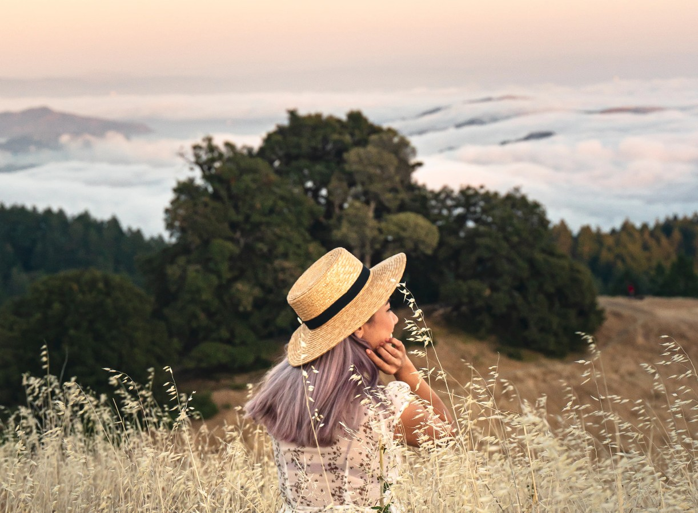

Cheerfully Becoming Mighty And Wise
Written July 21st 2020, 9:31:46 pm EDT by Dr. Meow

Growing up, getting up, moving up, rising up,
we each have this abstract sense of a special direction.
It calls to us when we are down,
and it calls when we can go higher.
You don't even need to speak a language,
just lift you finger and point to the sky.
It works for everything and every time,
it encourages us to continue to rise.
There is always an up,
and never an end in sight.
Growing up demands that we open our eyes and rise,
stand our ground and look to the skies.
So as long as we aim for the tallest of mountains and rise,
our knowledge will quickly catch up in size.
Wherever we begin, we can rise,
to grow in wisdom to no end, is the ultimate prize.
May we each discover our path to wisdom and rise,
cheerfully becoming mighty and wise.